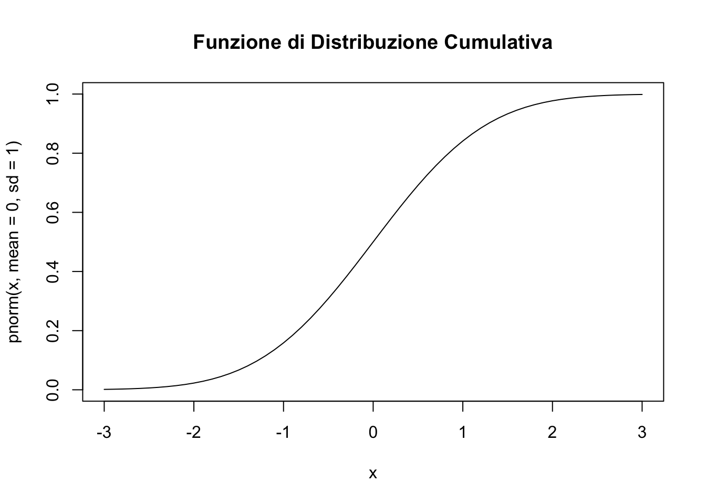

Distribuzione Normale: Discutere le proprietà fondamentali della distribuzione normale, inclusa la sua simmetria e i parametri di media (μ) e deviazione standard (σ).
Funzioni norm in R:
d-norm: Calcola la densità di probabilità.
p-norm: Calcola la funzione di distribuzione cumulativa.
q-norm: Calcola il quantile (percentile).
r-norm: Genera numeri casuali dalla distribuzione normale.
Esempi e Grafici: Fornire esempi pratici e creare grafici che illustrano l’uso di queste funzioni in R.
Esempi in R
Code
x <-seq(-3, 3, by=0.1)y <-dnorm(x, mean=0, sd=1)plot(x, y, type="l", main="Funzione di Densità della Distribuzione Normale")
Code
# Funzione di Distribuzione Cumulativaplot(x, pnorm(x, mean=0, sd=1), type="l", main="Funzione di Distribuzione Cumulativa")

2. Grafici per Spiegare Asimmetria e Curtosi
Creazione dei Grafici: Utilizzare R o Python per creare grafici che spiegano i concetti di asimmetria e curtosi.
Asimmetria: Misura della simmetria della distribuzione.
Curtosi: Misura della “punta” della distribuzione.
** Esempio di Asimmetria e Curtosi in R**
Code
library(moments)# Generare dati con diverse asimmetrie e curtosiset.seed(123)data_symmetric <-rnorm(1000)data_skewed <-rlnorm(1000)data_leptokurtic <-rt(1000, df=3)# Plotpar(mfrow=c(3,1))hist(data_symmetric, main="Distribuzione Simmetrica", probability=TRUE)hist(data_skewed, main="Distribuzione Asimmetrica", probability=TRUE)hist(data_leptokurtic, main="Distribuzione Leptocurtica", probability=TRUE)
3. Calcolo di Asimmetria e Curtosi in R
Funzioni R:
Asimmetria: Utilizzare skewness() per calcolare l’asimmetria.
Curtosi: Utilizzare kurtosis() per calcolare la curtosi.
Code
# Calcolo di Asimmetria e Curtosiskewness(data_symmetric)
[1] 0.06529391
Code
kurtosis(data_symmetric)
[1] 2.925747
Code
skewness(data_skewed)
[1] 5.502032
Code
kurtosis(data_skewed)
[1] 49.9249
Code
skewness(data_leptokurtic)
[1] 0.008589252
Code
kurtosis(data_leptokurtic)
[1] 7.347333
4. Applicazioni:
Dopo avere spiegato i concetti precedenti, utilizzarli in relazione ai dati relativi agli item del questionario FAI.
Source Code
---title: "H1: Distribuzione normale, asimmetria e curtosi"format: html: code-fold: show code-tools: true---## 1. Introduzione alla Distribuzione Normale- **Distribuzione Normale:** Discutere le proprietà fondamentali della distribuzione normale, inclusa la sua simmetria e i parametri di media (μ) e deviazione standard (σ).- **Funzioni `norm` in R:** - **d-norm:** Calcola la densità di probabilità. - **p-norm:** Calcola la funzione di distribuzione cumulativa. - **q-norm:** Calcola il quantile (percentile). - **r-norm:** Genera numeri casuali dalla distribuzione normale.- **Esempi e Grafici:** Fornire esempi pratici e creare grafici che illustrano l'uso di queste funzioni in R.**Esempi in R**```{r}x <-seq(-3, 3, by=0.1)y <-dnorm(x, mean=0, sd=1)plot(x, y, type="l", main="Funzione di Densità della Distribuzione Normale")# Funzione di Distribuzione Cumulativaplot(x, pnorm(x, mean=0, sd=1), type="l", main="Funzione di Distribuzione Cumulativa")```## 2. Grafici per Spiegare Asimmetria e Curtosi- **Creazione dei Grafici:** Utilizzare R o Python per creare grafici che spiegano i concetti di asimmetria e curtosi. - **Asimmetria:** Misura della simmetria della distribuzione. - **Curtosi:** Misura della "punta" della distribuzione.** Esempio di Asimmetria e Curtosi in R**```{r}library(moments)# Generare dati con diverse asimmetrie e curtosiset.seed(123)data_symmetric <-rnorm(1000)data_skewed <-rlnorm(1000)data_leptokurtic <-rt(1000, df=3)# Plotpar(mfrow=c(3,1))hist(data_symmetric, main="Distribuzione Simmetrica", probability=TRUE)hist(data_skewed, main="Distribuzione Asimmetrica", probability=TRUE)hist(data_leptokurtic, main="Distribuzione Leptocurtica", probability=TRUE)```## 3. Calcolo di Asimmetria e Curtosi in R- **Funzioni R:** - **Asimmetria:** Utilizzare `skewness()` per calcolare l'asimmetria. - **Curtosi:** Utilizzare `kurtosis()` per calcolare la curtosi.```{r}# Calcolo di Asimmetria e Curtosiskewness(data_symmetric)kurtosis(data_symmetric)skewness(data_skewed)kurtosis(data_skewed)skewness(data_leptokurtic)kurtosis(data_leptokurtic)```## 4. **Applicazioni:**Dopo avere spiegato i concetti precedenti, utilizzarli in relazione ai dati relativi agli item del questionario FAI.